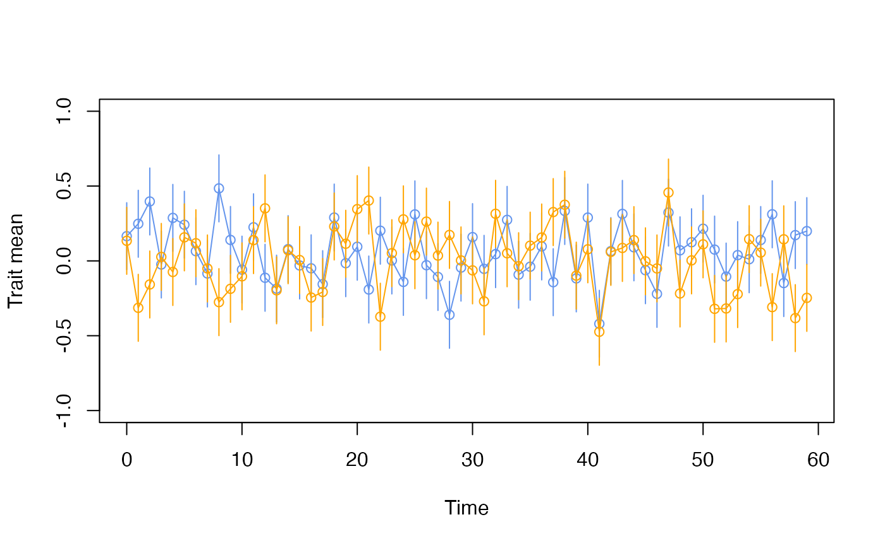

plotevoTS.multivariate.RdFunction to plot multiovariate evolutionary sequence (time-series), showing trait means over time.
plotevoTS.multivariate(
yy,
nse = 1,
col = NULL,
lty = NULL,
lwd = NULL,
pch = NULL,
x.label = NULL,
y.label = NULL,
y_min = NULL,
y_max = NULL,
cex.axis = NULL,
cex.lab = NULL,
cex.main = NULL,
axes = NULL
)a multivariate evoTS object
the number of standard errors represented by the error bars on the plot; default is 1
vector indicating colors
line type
line width
plotting symbols
label on x axis
label on y axis
minimum value of y axis
maximum value of y axis
Specify the size of the tick label numbers/text
specify the size of the axis label
specify the size of the title text
logical, whether to plot axes or not
The results are plotted.
## Generate two evolutionary sequences (time-sries)
x1 <- paleoTS::sim.Stasis(60, vp=1)
x2 <- paleoTS::sim.Stasis(60, vp=1)
## Make a multivariate data set
x1_x2<-make.multivar.evoTS(x1, x2)
## Plot the data
plotevoTS.multivariate(x1_x2, y_min=-1, y_max=1)
